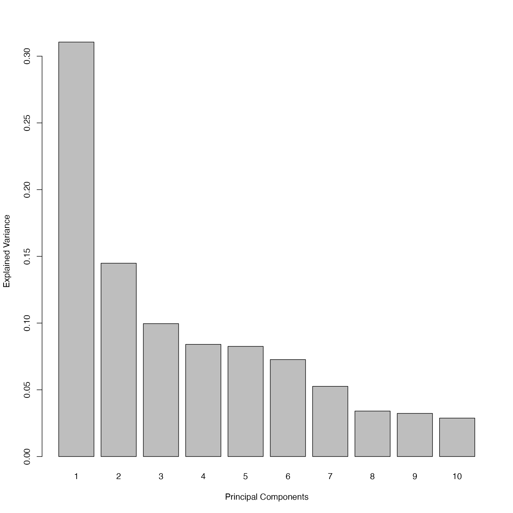
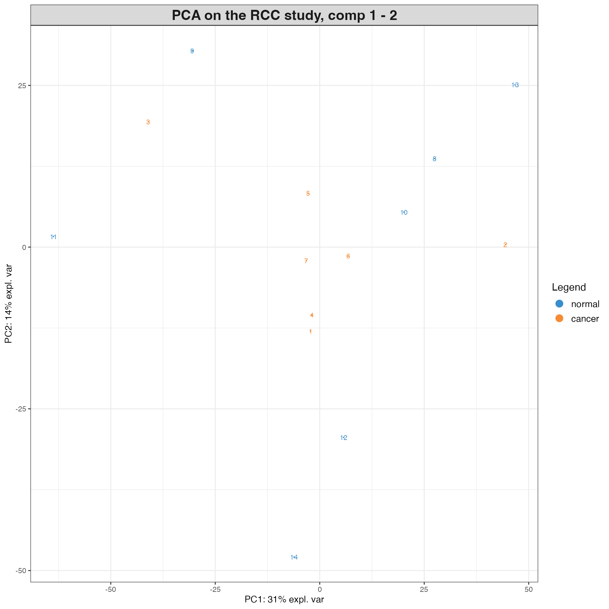
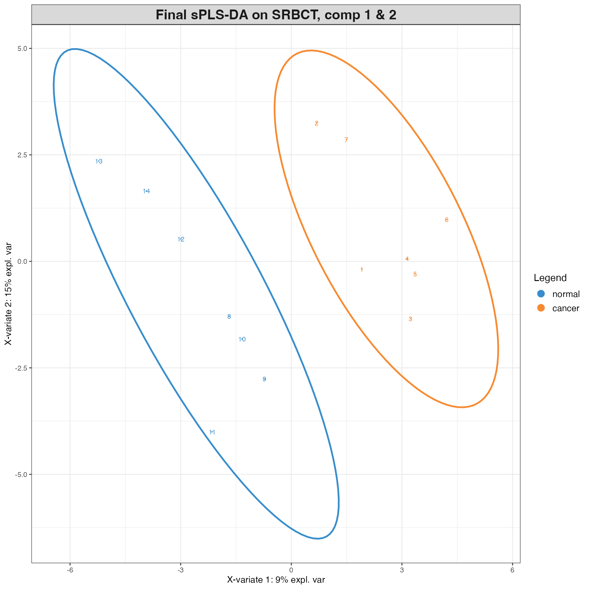
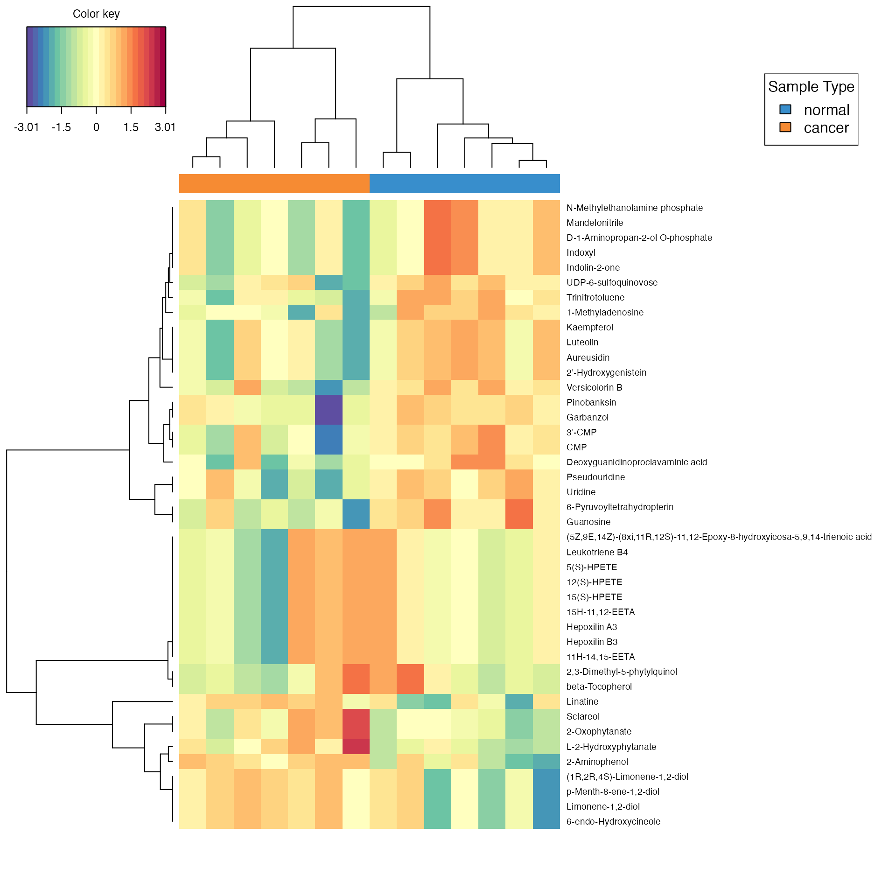
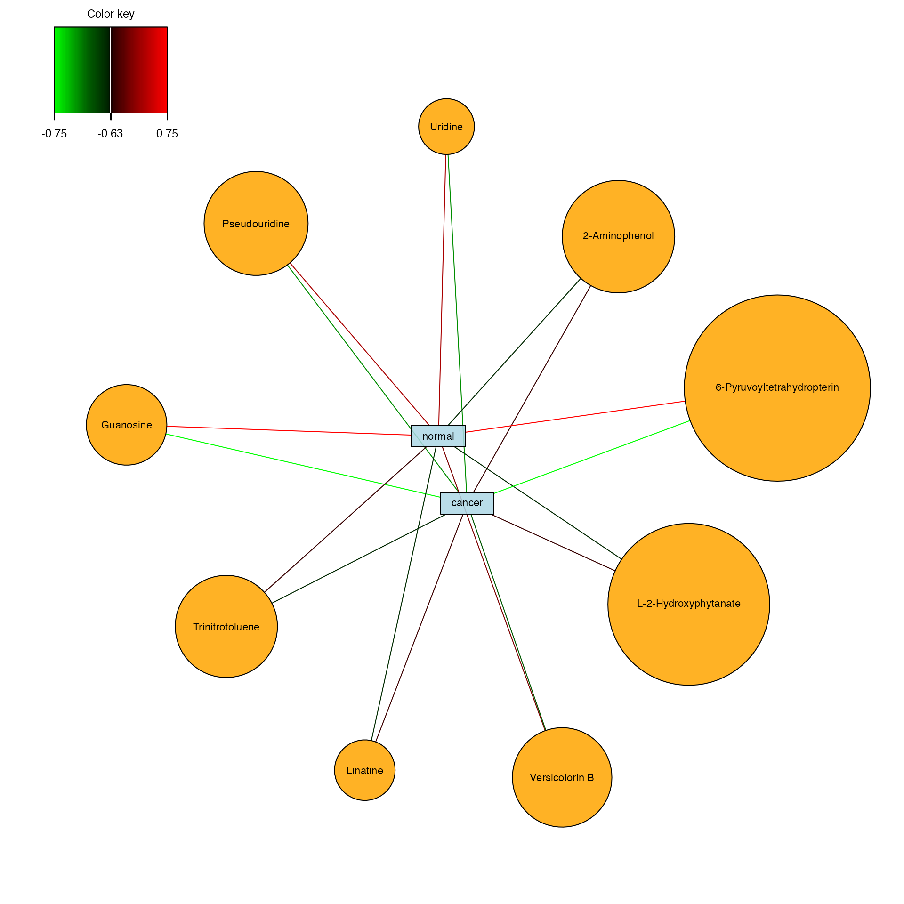

Case study
James Zhan
2024-07-04
case-study.rmdOutline:
- Load packages and data
- Replace the missing intensity values with half minimum imputation
- Prepare the data for MSMICA mega-scale targeted metabolomics analysis
- Prepare the data for MSMICA untargeted metabolomics analysis
- MSMICA mega-scale targeted metabolomics analysis
- Combine the MSMICA results from HILIC positive and C18 negative renal cancer study example data (7 paired renal cancer tissue samples and normal renal tissue samples taken from the same subjects) for a limma paired t-test comparison. Half minimum imputation is used for intensites with 0 values.
- MSMICA untargeted metabolomics analysis
- Using HILIC positive data and C18 negative data separately, perform a limma paired t-test comparison between renal cancer tissue and normal tissue samples within the same subject, select only features with FDR-adjusted p-value <= 0.20, and use MSMICA results to annotate the selected features. Half minimum imputation is used for intensites with 0 values.
- MSMICA targeted Sparse PLS Discriminant Analysis (sPLS-DA)
- Combine the HILIC positive and C18 negative MSMICA results for a sPLS-DA analysis to compare renal cancer tissue and normal tissue samples within the same subject, followed by the sample grouping plot (shows the relationship and similaries between sample), hierarchical clustering heatmap, and relevance network analysis using mixOmics R package. Half minimum imputation is used for intensites with 0 values.
Load packages and data
##
## Attaching package: 'dplyr'## The following objects are masked from 'package:stats':
##
## filter, lag## The following objects are masked from 'package:base':
##
## intersect, setdiff, setequal, union
library(tidyr)
library(limma)
library(splines)
install.packages("/Users/james/Library/Mobile Documents/com~apple~CloudDocs/Desktop/Emory University - Ph.D./PhD dissertation/MSMICA/Publication/Abstract/MSMICA algorithm/MSMICA", repos = NULL, type = "source")## Installing package into '/private/var/folders/r7/g81tj9ds70bdmgdbnp49ddn80000gn/T/RtmpOCHyQv/temp_libpath760e32644c5b'
## (as 'lib' is unspecified)
library(MSMICA)
setwd("/Users/james/Library/Mobile Documents/com~apple~CloudDocs/Desktop/Emory University - Ph.D./PhD dissertation/MSMICA/Publication/Abstract/MSMICA algorithm/MSMICA/case study")
# import feature table data
## hilic positive data
data(feature_table_exp_hilicpos)
print(feature_table_exp_hilicpos)## # A tibble: 11,267 × 44
## mz time NM5_GS_0_1 NM5_GS_0_3 NM5_GS_0_5 TM5_GS_0_1 TM5_GS_0_3 TM5_GS_0_5
## <dbl> <dbl> <dbl> <dbl> <dbl> <dbl> <dbl> <dbl>
## 1 85.0 49.4 127294848 93929747 66033558 159310776 99288246 82335881
## 2 85.0 83.4 9282517 14636989 12921267 8682974 10271317 7132031
## 3 85.1 109. 13329008 15703815 8642594 8449978 8644413 3355450
## 4 85.2 30.8 0 26889920 32196356 25253361 47516277 54826651
## 5 85.3 31.5 0 8566404 14599669 9787948 14132846 23874217
## 6 85.4 30.2 0 13508765 16721105 61654938 9957638 3201424
## 7 85.4 33.8 15066696 0 0 11540798 20251857 31230557
## 8 85.6 156. 6775208 4078654 0 2803849 107620 0
## 9 85.6 76.0 0 0 0 4678248 3290240 1366488
## 10 85.8 106. 0 69397733 0 0 0 0
## # ℹ 11,257 more rows
## # ℹ 36 more variables: NM11_GS_0_1 <dbl>, NM11_GS_0_3 <dbl>, NM11_GS_0_5 <dbl>,
## # TM11_GS_0_1 <dbl>, TM11_GS_0_3 <dbl>, TM11_GS_0_5 <dbl>, NM6_GS_0_1 <dbl>,
## # NM6_GS_0_3 <dbl>, NM6_GS_0_5 <dbl>, TM4_GS_0_1 <dbl>, TM4_GS_0_3 <dbl>,
## # TM4_GS_0_5 <dbl>, NM4_GS_0_1 <dbl>, NM4_GS_0_3 <dbl>, NM4_GS_0_5 <dbl>,
## # TM6_GS_0_1 <dbl>, TM6_GS_0_3 <dbl>, TM6_GS_0_5 <dbl>, NM7_GS_0_1 <dbl>,
## # NM7_GS_0_3 <dbl>, NM7_GS_0_5 <dbl>, NM9_GS_0_1 <dbl>, NM9_GS_0_3 <dbl>, …## # A tibble: 8,456 × 44
## mz time NM5_GS_0_2 NM5_GS_0_4 NM5_GS_0_6 TM5_GS_0_2 TM5_GS_0_4 TM5_GS_0_6
## <dbl> <dbl> <dbl> <dbl> <dbl> <dbl> <dbl> <dbl>
## 1 85.0 123. 3451142 17675474 4332024 8899759 12204896 12666665
## 2 85.0 288. 2267915 3117932 3828736 4224009 4200063 3788690
## 3 85.0 293. 3691321 2391226 3155868 2361909 4033037 2426635
## 4 85.0 24.9 38858050 43782168 32818312 36913236 36235779 28511185
## 5 85.0 95.0 3104800 2580525 3767773 2646283 2663336 1084595
## 6 85.4 236. 6096726 4051104 1465424 5114500 971445 2515400
## 7 85.5 22.0 0 0 0 0 0 0
## 8 85.5 210. 0 2349999 5895828 1703156 3593730 8463200
## 9 85.6 211. 0 258962 2349208 0 1626943 3316184
## 10 85.7 217. 747185 3036484 5062762 4169043 3809372 9121575
## # ℹ 8,446 more rows
## # ℹ 36 more variables: NM11_GS_0_2 <dbl>, NM11_GS_0_4 <dbl>, NM11_GS_0_6 <dbl>,
## # TM11_GS_0_2 <dbl>, TM11_GS_0_4 <dbl>, TM11_GS_0_6 <dbl>, NM6_GS_0_2 <dbl>,
## # NM6_GS_0_4 <dbl>, NM6_GS_0_6 <dbl>, TM4_GS_0_2 <dbl>, TM4_GS_0_4 <dbl>,
## # TM4_GS_0_6 <dbl>, NM4_GS_0_2 <dbl>, NM4_GS_0_4 <dbl>, NM4_GS_0_6 <dbl>,
## # TM6_GS_0_2 <dbl>, TM6_GS_0_4 <dbl>, TM6_GS_0_6 <dbl>, NM7_GS_0_2 <dbl>,
## # NM7_GS_0_4 <dbl>, NM7_GS_0_6 <dbl>, NM9_GS_0_2 <dbl>, NM9_GS_0_4 <dbl>, …
# replace all 0 values with NA after column 2
feature_table_exp_hilicpos[, -c(1:2)] = feature_table_exp_hilicpos[, -c(1:2)] %>%
mutate_all(~na_if(., 0))
# replace all 0 values with NA after column 2
feature_table_exp_c18neg[, -c(1:2)] = feature_table_exp_c18neg[, -c(1:2)] %>%
mutate_all(~na_if(., 0))
# median summarize the triplicates
df <- feature_table_exp_hilicpos
# Gather the triplicates into a long format
df_long <- df %>%
pivot_longer(cols = -c(mz, time), names_to = "sample", values_to = "value")
# Extract the base sample name (without the replicate number)
df_long <- df_long %>%
mutate(sample_base = sub("(_[0-9])$", "", sample))
# Compute the median for each set of triplicates
df_median <- df_long %>%
group_by(mz, time, sample_base) %>%
summarize(median_value = median(value), .groups = "drop")
# Pivot back to the wide format
feature_table_exp_hilicpos <- df_median %>%
pivot_wider(names_from = sample_base, values_from = median_value)
# View the summarized data frame
print(feature_table_exp_hilicpos)## # A tibble: 11,267 × 16
## mz time NM11_GS_0 NM4_GS_0 NM5_GS_0 NM6_GS_0 NM7_GS_0 NM8_GS_0 NM9_GS_0
## <dbl> <dbl> <dbl> <dbl> <dbl> <dbl> <dbl> <dbl> <dbl>
## 1 85.0 49.4 91637758 53374857 93929747 47592345 49580672 65890518 24709252
## 2 85.0 83.4 20848423 11877054 12921267 17645801 7985920 17303431 10586069
## 3 85.1 109. 12062332 3298088 13329008 9183408 1647494 15424423 10908045
## 4 85.2 30.8 43116622 24855153 NA 8517991 34448219 29816051 24415023
## 5 85.3 31.5 13212572 10524120 NA NA 16114654 NA NA
## 6 85.4 30.2 NA NA NA 5593932 9671769 NA 11869357
## 7 85.4 33.8 NA 11456826 NA NA 8251705 NA NA
## 8 85.6 156. NA NA NA 2907723 NA NA NA
## 9 85.6 76.0 NA NA NA NA NA 3804028 NA
## 10 85.8 106. NA NA NA NA NA NA NA
## # ℹ 11,257 more rows
## # ℹ 7 more variables: TM11_GS_0 <dbl>, TM4_GS_0 <dbl>, TM5_GS_0 <dbl>,
## # TM6_GS_0 <dbl>, TM7_GS_0 <dbl>, TM8_GS_0 <dbl>, TM9_GS_0 <dbl>
# median summarize the triplicates
df <- feature_table_exp_c18neg
# Gather the triplicates into a long format
df_long <- df %>%
pivot_longer(cols = -c(mz, time), names_to = "sample", values_to = "value")
# Extract the base sample name (without the replicate number)
df_long <- df_long %>%
mutate(sample_base = sub("(_[0-9])$", "", sample))
# Compute the median for each set of triplicates
df_median <- df_long %>%
group_by(mz, time, sample_base) %>%
summarize(median_value = median(value), .groups = "drop")
# Pivot back to the wide format
feature_table_exp_c18neg <- df_median %>%
pivot_wider(names_from = sample_base, values_from = median_value)
# View the summarized data frame
print(feature_table_exp_c18neg)## # A tibble: 8,456 × 16
## mz time NM11_GS_0 NM4_GS_0 NM5_GS_0 NM6_GS_0 NM7_GS_0 NM8_GS_0 NM9_GS_0
## <dbl> <dbl> <dbl> <dbl> <dbl> <dbl> <dbl> <dbl> <dbl>
## 1 85.0 123. 7722094 10229284 4332024 5469528 8399260 2175857 1929214
## 2 85.0 288. 4407084 3951785 3117932 3267173 4019103 3336862 3128299
## 3 85.0 293. 2607157 3002005 3155868 1907645 1002345 825507 2679529
## 4 85.0 24.9 64373076 39894574 38858050 35446680 35724755 34192423 33235053
## 5 85.0 95.0 2999487 2543380 3104800 1624592 2369531 4524972 2823455
## 6 85.4 236. 4240866 4900397 4051104 3749169 2528974 2431985 4520111
## 7 85.5 22.0 NA NA NA NA NA NA NA
## 8 85.5 210. 3676008 NA NA 1146822 4697878 6359702 3184766
## 9 85.6 211. 2509843 NA NA NA NA 2801030 NA
## 10 85.7 217. 4761129 3545481 3036484 1748788 3907803 7352392 3096899
## # ℹ 8,446 more rows
## # ℹ 7 more variables: TM11_GS_0 <dbl>, TM4_GS_0 <dbl>, TM5_GS_0 <dbl>,
## # TM6_GS_0 <dbl>, TM7_GS_0 <dbl>, TM8_GS_0 <dbl>, TM9_GS_0 <dbl>
# Filter out features appear less than 20% of all samples. The intensity column starts from the 3rd column.
feature_table_exp_hilicpos = QC_filter(x = feature_table_exp_hilicpos, metabolite_start_column = 3, minimum_sample_appear = 0.20)
feature_table_exp_c18neg = QC_filter(x = feature_table_exp_c18neg, metabolite_start_column = 3, minimum_sample_appear = 0.20)
# import MSMICA results
## hilic positive data
hilicpos_MSMICA_identified_metabolites = read_csv("MSMICA_test_hilicpos_MSMICA_identified_metabolites.csv")## Rows: 1669 Columns: 12## ── Column specification ────────────────────────────────────────────────────────
## Delimiter: ","
## chr (6): ion_mode, identification_type, KEGGID, Identified_Name, Adduct, ide...
## dbl (6): Exact_mass, isotopic_mass, mz, time, correlation, MSMICA_identifica...
##
## ℹ Use `spec()` to retrieve the full column specification for this data.
## ℹ Specify the column types or set `show_col_types = FALSE` to quiet this message.
print(hilicpos_MSMICA_identified_metabolites)## # A tibble: 1,669 × 12
## ion_mode identification_type KEGGID Identified_Name Exact_mass isotopic_mass
## <chr> <chr> <chr> <chr> <dbl> <dbl>
## 1 positive identified C00003 NAD+ 663. 665.
## 2 positive identified C00009 Orthophosphate 98.0 100.
## 3 positive identified C00010 CoA 767. 768.
## 4 positive identified C00016 FAD 785. 786.
## 5 positive identified C00018 Pyridoxal phosp… 247. 248.
## 6 positive identified C00019 S-Adenosyl-L-me… 398. 399.
## 7 positive identified C00020 AMP 347. 348.
## 8 positive identified C00021 S-Adenosyl-L-ho… 384. 385.
## 9 positive identified C00022 Pyruvate 88.0 89.0
## 10 positive identified C00024 Acetyl-CoA 809. 810.
## # ℹ 1,659 more rows
## # ℹ 6 more variables: Adduct <chr>, mz <dbl>, time <dbl>, correlation <dbl>,
## # MSMICA_identification <dbl>, identification_method <chr>
## c18 negative data
c18neg_MSMICA_identified_metabolites = read_csv("MSMICA_test_c18neg_MSMICA_identified_metabolites.csv")## Rows: 1650 Columns: 12
## ── Column specification ────────────────────────────────────────────────────────
## Delimiter: ","
## chr (6): ion_mode, identification_type, KEGGID, Identified_Name, Adduct, ide...
## dbl (6): Exact_mass, isotopic_mass, mz, time, correlation, MSMICA_identifica...
##
## ℹ Use `spec()` to retrieve the full column specification for this data.
## ℹ Specify the column types or set `show_col_types = FALSE` to quiet this message.
print(c18neg_MSMICA_identified_metabolites)## # A tibble: 1,650 × 12
## ion_mode identification_type KEGGID Identified_Name Exact_mass isotopic_mass
## <chr> <chr> <chr> <chr> <dbl> <dbl>
## 1 negative identified C00002 ATP 507. 508.
## 2 negative identified C00003 NAD+ 663. 665.
## 3 negative identified C00004 NADH 665. 666.
## 4 negative identified C00008 ADP 427. 428.
## 5 negative identified C00009 Orthophosphate 98.0 100.
## 6 negative identified C00010 CoA 767. 768.
## 7 negative identified C00011 CO2 44.0 45.0
## 8 negative identified C00013 Diphosphate 178. 180.
## 9 negative identified C00016 FAD 785. 786.
## 10 negative identified C00020 AMP 347. 348.
## # ℹ 1,640 more rows
## # ℹ 6 more variables: Adduct <chr>, mz <dbl>, time <dbl>, correlation <dbl>,
## # MSMICA_identification <dbl>, identification_method <chr>Replace the missing intensity values with half minimum imputation
# Function to impute missing values with half of the minimum value in the row
impute_missing_values <- function(row) {
# Extract the values after column 2
values <- row[-c(1, 2)]
# Calculate half of the minimum value in the row (excluding NA)
half_min_value <- min(values, na.rm = TRUE) / 2
# Impute NA values with half of the minimum value
values[is.na(values)] <- half_min_value
# Combine the first two columns with the imputed values
return(c(row[1:2], values))
}
# HILIC positive ############################################################################################################
# Apply the imputation function to each row
feature_table_exp_hilicpos_imputed <- t(apply(feature_table_exp_hilicpos, 1, impute_missing_values))
# Convert the result back to a data frame and ensure the column names are preserved
feature_table_exp_hilicpos_imputed <- as.data.frame(feature_table_exp_hilicpos_imputed, stringsAsFactors = FALSE)
colnames(feature_table_exp_hilicpos_imputed) <- colnames(feature_table_exp_hilicpos_imputed)
feature_table_exp_hilicpos_imputed = tibble(feature_table_exp_hilicpos_imputed)
# Round mz to 4 decimal places and time to 1 decimal place. This is because MSMICA already rounded mz to 4 decimal places and time to 1 decimal place. We need to match the feature table with MSMICA results later.
feature_table_exp_hilicpos_imputed$mz = round(feature_table_exp_hilicpos_imputed$mz, 4)
feature_table_exp_hilicpos_imputed$time = round(feature_table_exp_hilicpos_imputed$time, 1)
print(feature_table_exp_hilicpos_imputed)## # A tibble: 2,805 × 16
## mz time NM11_GS_0 NM4_GS_0 NM5_GS_0 NM6_GS_0 NM7_GS_0 NM8_GS_0 NM9_GS_0
## <dbl> <dbl> <dbl> <dbl> <dbl> <dbl> <dbl> <dbl> <dbl>
## 1 85.0 49.4 91637758 53374857 93929747 4.76e7 4.96e7 6.59e7 2.47e7
## 2 85.0 83.4 20848423 11877054 12921267 1.76e7 7.99e6 1.73e7 1.06e7
## 3 85.1 109. 12062332 3298088 13329008 9.18e6 1.65e6 1.54e7 1.09e7
## 4 86.1 86 3080601 16802982 85563348 1.54e7 1.29e7 3.66e6 1.45e7
## 5 86.1 48.2 418067624 348550236 406656114 3.78e8 2.81e8 5.31e8 3.59e8
## 6 86.9 62.7 37894712 34362086 7208751 3.22e7 9.35e6 4.08e7 2.32e7
## 7 87.0 32.2 332545005 173478917 362784044 2.26e8 2.85e8 2.58e8 4.09e8
## 8 87.0 293 6425940 6048306 5233237 4.99e6 3.53e6 3.10e6 1.34e6
## 9 87.1 85.8 16335772 15361607 20702962 2.29e7 7.86e6 2.08e7 9.85e6
## 10 87.1 32.3 131934631 74985219 146405595 9.36e7 1.21e8 1.11e8 1.83e8
## # ℹ 2,795 more rows
## # ℹ 7 more variables: TM11_GS_0 <dbl>, TM4_GS_0 <dbl>, TM5_GS_0 <dbl>,
## # TM6_GS_0 <dbl>, TM7_GS_0 <dbl>, TM8_GS_0 <dbl>, TM9_GS_0 <dbl>
# C18 negative ############################################################################################################
# Apply the imputation function to each row
feature_table_exp_c18neg_imputed <- t(apply(feature_table_exp_c18neg, 1, impute_missing_values))
# Convert the result back to a data frame and ensure the column names are preserved
feature_table_exp_c18neg_imputed <- as.data.frame(feature_table_exp_c18neg_imputed, stringsAsFactors = FALSE)
colnames(feature_table_exp_c18neg_imputed) <- colnames(feature_table_exp_c18neg_imputed)
feature_table_exp_c18neg_imputed = tibble(feature_table_exp_c18neg_imputed)
# Round mz to 4 decimal places and time to 1 decimal place. This is because MSMICA already rounded mz to 4 decimal places and time to 1 decimal place. We need to match the feature table with MSMICA results later.
feature_table_exp_c18neg_imputed$mz = round(feature_table_exp_c18neg_imputed$mz, 4)
feature_table_exp_c18neg_imputed$time = round(feature_table_exp_c18neg_imputed$time, 1)
print(feature_table_exp_c18neg_imputed)## # A tibble: 4,215 × 16
## mz time NM11_GS_0 NM4_GS_0 NM5_GS_0 NM6_GS_0 NM7_GS_0 NM8_GS_0 NM9_GS_0
## <dbl> <dbl> <dbl> <dbl> <dbl> <dbl> <dbl> <dbl> <dbl>
## 1 85.0 123. 7722094 10229284 4332024 5469528 8399260 2175857 1929214
## 2 85.0 288. 4407084 3951785 3117932 3267173 4019103 3336862 3128299
## 3 85.0 293. 2607157 3002005 3155868 1907645 1002345 825507 2679529
## 4 85.0 24.9 64373076 39894574 38858050 35446680 35724755 34192423 33235053
## 5 85.0 95 2999487 2543380 3104800 1624592 2369531 4524972 2823455
## 6 85.4 236. 4240866 4900397 4051104 3749169 2528974 2431985 4520111
## 7 85.7 217. 4761129 3545481 3036484 1748788 3907803 7352392 3096899
## 8 86.0 292. 2021331 1824622 749073 2619466 1898965 4090192 2412457
## 9 86.0 91.1 2990851 3362815 2704893 2571083 3062804 830218 2360478
## 10 86.2 294. 1042016 485633 598734 560341 675774 1781520 705715
## # ℹ 4,205 more rows
## # ℹ 7 more variables: TM11_GS_0 <dbl>, TM4_GS_0 <dbl>, TM5_GS_0 <dbl>,
## # TM6_GS_0 <dbl>, TM7_GS_0 <dbl>, TM8_GS_0 <dbl>, TM9_GS_0 <dbl>Prepare the data for MSMICA mega-scale targeted metabolomics analysis
# Prepare the data for MSMICA mega-scale targeted metabolomics analysis ############################################################################################################
# HILIC positive ############################################################################################################
# inner join the imputed feature table and MSMICA results based on mz=mz, rt=time. This is to add intensity values to the MSMICA results.
hilicpos_MSMICA_featuretable <- inner_join(hilicpos_MSMICA_identified_metabolites, feature_table_exp_hilicpos_imputed, , by=c("mz"="mz", "time"="time"))
# remove those duplicates with different KEGGID but have the same Identified_Name
hilicpos_MSMICA_featuretable = hilicpos_MSMICA_featuretable %>%
distinct(Identified_Name, .keep_all = TRUE)
# calculate the mean intensity for each metabolite using intensity values from all samples (starting from column 13)
hilicpos_MSMICA_featuretable$mean_intensity = rowMeans(hilicpos_MSMICA_featuretable[,13:ncol(hilicpos_MSMICA_featuretable)], na.rm = TRUE)
# move the mean_intensity column right after the identification_method column
hilicpos_MSMICA_featuretable = hilicpos_MSMICA_featuretable %>%
relocate(mean_intensity, .after = identification_method)
# C18 negative ############################################################################################################
# inner join the imputed feature table and MSMICA results based on mz=mz, rt=time. This is to add intensity values to the MSMICA results.
c18neg_MSMICA_featuretable <- inner_join(c18neg_MSMICA_identified_metabolites, feature_table_exp_c18neg_imputed, , by=c("mz"="mz", "time"="time"))
# remove those duplicates with different KEGGID but have the same Identified_Name
c18neg_MSMICA_featuretable = c18neg_MSMICA_featuretable %>%
distinct(Identified_Name, .keep_all = TRUE)
# calculate the mean intensity for each metabolite using intensity values from all samples (starting from column 13)
c18neg_MSMICA_featuretable$mean_intensity = rowMeans(c18neg_MSMICA_featuretable[,13:ncol(c18neg_MSMICA_featuretable)], na.rm = TRUE)
# move the mean_intensity column right after the identification_method column
c18neg_MSMICA_featuretable = c18neg_MSMICA_featuretable %>%
relocate(mean_intensity, .after = identification_method)
# combine the HILIC positive and C18 negative MSMICA results by rows ############################################################################################################
hilicpos_c18neg_MSMICA_featuretable = rbind(hilicpos_MSMICA_featuretable, c18neg_MSMICA_featuretable)
# group by KEGGID and select the metabolites with highest mean intensity if they are the same metabolite detected in both HILIC positive and C18 negative
hilicpos_c18neg_MSMICA_featuretable_clean = hilicpos_c18neg_MSMICA_featuretable %>%
group_by(KEGGID) %>%
slice_max(mean_intensity) %>%
ungroup()
# check the cleaned table
print(hilicpos_c18neg_MSMICA_featuretable_clean)## # A tibble: 1,822 × 27
## ion_mode identification_type KEGGID Identified_Name Exact_mass isotopic_mass
## <chr> <chr> <chr> <chr> <dbl> <dbl>
## 1 negative identified C00003 NAD+ 663. 665.
## 2 negative identified C00008 ADP 427. 428.
## 3 negative identified C00009 Orthophosphate 98.0 100.
## 4 negative identified C00011 CO2 44.0 45.0
## 5 negative identified C00013 Diphosphate 178. 180.
## 6 negative identified C00016 FAD 785. 786.
## 7 negative identified C00020 AMP 347. 348.
## 8 positive identified C00021 S-Adenosyl-L-ho… 384. 385.
## 9 negative identified C00022 Pyruvate 88.0 89.0
## 10 negative identified C00025 L-Glutamate 147. 148.
## # ℹ 1,812 more rows
## # ℹ 21 more variables: Adduct <chr>, mz <dbl>, time <dbl>, correlation <dbl>,
## # MSMICA_identification <dbl>, identification_method <chr>,
## # mean_intensity <dbl>, NM11_GS_0 <dbl>, NM4_GS_0 <dbl>, NM5_GS_0 <dbl>,
## # NM6_GS_0 <dbl>, NM7_GS_0 <dbl>, NM8_GS_0 <dbl>, NM9_GS_0 <dbl>,
## # TM11_GS_0 <dbl>, TM4_GS_0 <dbl>, TM5_GS_0 <dbl>, TM6_GS_0 <dbl>,
## # TM7_GS_0 <dbl>, TM8_GS_0 <dbl>, TM9_GS_0 <dbl>
# all MSMICA identified metabolites in HILIC positive and C18 negative #############################
# transpose the table starting at column 14
hilicpos_c18neg_MSMICA_featuretable_clean_t = t(hilicpos_c18neg_MSMICA_featuretable_clean[,14:ncol(hilicpos_c18neg_MSMICA_featuretable_clean)])
hilicpos_c18neg_MSMICA_featuretable_clean_t = as.data.frame(hilicpos_c18neg_MSMICA_featuretable_clean_t)
# set the column names as the Identified_Name
colnames(hilicpos_c18neg_MSMICA_featuretable_clean_t) = hilicpos_c18neg_MSMICA_featuretable_clean$Identified_Name
# add Group_ID as a column
hilicpos_c18neg_MSMICA_featuretable_clean_t$Group_ID = rownames(hilicpos_c18neg_MSMICA_featuretable_clean_t)
# move Group_ID as the first column
hilicpos_c18neg_MSMICA_featuretable_clean_t = tibble(hilicpos_c18neg_MSMICA_featuretable_clean_t) %>%
select(Group_ID, everything())
# Seperate the Group_ID into columns: Group, Temperature, Time, SampleID
hilicpos_c18neg_MSMICA_featuretable_clean_t = hilicpos_c18neg_MSMICA_featuretable_clean_t %>%
separate(Group_ID, c("Group", "Temperature", "Time"), sep = "_") %>%
# create a new column, sample_tyoe, to indicate the sample type: if Group starts with NM, then it is normal, otherwise it is cancer
mutate(sample_type = ifelse(stringr::str_detect(Group, "^NM"), "normal", "cancer")) %>%
# move sample type to the first column
select(sample_type, everything())
# separate the Group column into Group and ParticipantID: the first two characters are Group, the rest are ParticipantID
hilicpos_c18neg_MSMICA_featuretable_clean_t = hilicpos_c18neg_MSMICA_featuretable_clean_t %>%
separate(Group, c("Group", "ParticipantID"), sep = 2)
# Convert all intensity values to log2
hilicpos_c18neg_MSMICA_featuretable_clean_t[, -c(1:5)] = hilicpos_c18neg_MSMICA_featuretable_clean_t[, -c(1:5)] %>%
mutate_all(~log2(.))
# check the data ready for MSMICA mega-scale targeted metabolomics analysis
print(hilicpos_c18neg_MSMICA_featuretable_clean_t)## # A tibble: 14 × 1,827
## sample_type Group ParticipantID Temperature Time `NAD+` ADP Orthophosphate
## <chr> <chr> <chr> <chr> <chr> <dbl> <dbl> <dbl>
## 1 normal NM 11 GS 0 26.1 31.6 31.8
## 2 normal NM 4 GS 0 26.3 31.2 30.9
## 3 normal NM 5 GS 0 27.2 31.4 31.7
## 4 normal NM 6 GS 0 27.2 30.9 31.8
## 5 normal NM 7 GS 0 23.9 29.4 30.7
## 6 normal NM 8 GS 0 26.8 29.7 31.4
## 7 normal NM 9 GS 0 26.1 29.8 31.9
## 8 cancer TM 11 GS 0 25.5 29.6 30.7
## 9 cancer TM 4 GS 0 27.6 30.1 31.7
## 10 cancer TM 5 GS 0 26.1 31.0 30.8
## 11 cancer TM 6 GS 0 28.8 31.4 32.2
## 12 cancer TM 7 GS 0 28.4 32.5 31.6
## 13 cancer TM 8 GS 0 24.5 28.4 30.2
## 14 cancer TM 9 GS 0 27.7 29.7 31.9
## # ℹ 1,819 more variables: CO2 <dbl>, Diphosphate <dbl>, FAD <dbl>, AMP <dbl>,
## # `S-Adenosyl-L-homocysteine` <dbl>, Pyruvate <dbl>, `L-Glutamate` <dbl>,
## # `2-Oxoglutarate` <dbl>, `UDP-glucose` <dbl>, `D-Glucose` <dbl>,
## # Acetate <dbl>, GDP <dbl>, Oxaloacetate <dbl>, Glycine <dbl>,
## # `L-Alanine` <dbl>, Succinate <dbl>,
## # `UDP-N-acetyl-alpha-D-glucosamine` <dbl>, `L-Lysine` <dbl>,
## # `L-Aspartate` <dbl>, Glutathione <dbl>, `UDP-alpha-D-galactose` <dbl>, …Prepare the data for MSMICA untargeted metabolomics analysis
# Prepare the data for MSMICA untargeted metabolomics analysis ############################################################################################################
# HILIC positive ############################################################################################################
# all MSMICA identified metabolites in HILIC positive and C18 negative #############################
# transpose the table starting at column 13
feature_table_exp_hilicpos_imputed_t = t(feature_table_exp_hilicpos_imputed[,3:ncol(feature_table_exp_hilicpos_imputed)])
feature_table_exp_hilicpos_imputed_t = as.data.frame(feature_table_exp_hilicpos_imputed_t)
# set the column names as the combination of mz and time
colnames(feature_table_exp_hilicpos_imputed_t) = paste0(feature_table_exp_hilicpos_imputed$mz, "_", feature_table_exp_hilicpos_imputed$time)
# add Group_ID as a column
feature_table_exp_hilicpos_imputed_t$Group_ID = rownames(feature_table_exp_hilicpos_imputed_t)
# move Group_ID as the first column
feature_table_exp_hilicpos_imputed_t = tibble(feature_table_exp_hilicpos_imputed_t) %>%
select(Group_ID, everything())
# Seperate the Group_ID into columns: Group, Temperature, Time, SampleID
feature_table_exp_hilicpos_imputed_t = feature_table_exp_hilicpos_imputed_t %>%
separate(Group_ID, c("Group", "Temperature", "Time"), sep = "_") %>%
# create a new column, sample_tyoe, to indicate the sample type: if Group starts with NM, then it is normal, otherwise it is cancer
mutate(sample_type = ifelse(stringr::str_detect(Group, "^NM"), "normal", "cancer")) %>%
# move sample type to the first column
select(sample_type, everything())
# separate the Group column into Group and ParticipantID: the first two characters are Group, the rest are ParticipantID
feature_table_exp_hilicpos_imputed_t = feature_table_exp_hilicpos_imputed_t %>%
separate(Group, c("Group", "ParticipantID"), sep = 2)
# Convert all intensity values to log2
feature_table_exp_hilicpos_imputed_t[, -c(1:5)] = feature_table_exp_hilicpos_imputed_t[, -c(1:5)] %>%
mutate_all(~log2(.))
# check the data ready for MSMICA untargeted metabolomics analysis
print(feature_table_exp_hilicpos_imputed_t)## # A tibble: 14 × 2,810
## sample_type Group ParticipantID Temperature Time `85.0284_49.4`
## <chr> <chr> <chr> <chr> <chr> <dbl>
## 1 normal NM 11 GS 0 26.4
## 2 normal NM 4 GS 0 25.7
## 3 normal NM 5 GS 0 26.5
## 4 normal NM 6 GS 0 25.5
## 5 normal NM 7 GS 0 25.6
## 6 normal NM 8 GS 0 26.0
## 7 normal NM 9 GS 0 24.6
## 8 cancer TM 11 GS 0 26.6
## 9 cancer TM 4 GS 0 24.8
## 10 cancer TM 5 GS 0 26.6
## 11 cancer TM 6 GS 0 26.6
## 12 cancer TM 7 GS 0 26.4
## 13 cancer TM 8 GS 0 25.7
## 14 cancer TM 9 GS 0 25.3
## # ℹ 2,804 more variables: `85.0477_83.4` <dbl>, `85.0841_109.4` <dbl>,
## # `86.06_86` <dbl>, `86.0964_48.2` <dbl>, `86.9086_62.7` <dbl>,
## # `86.9504_32.2` <dbl>, `87.0441_293` <dbl>, `87.0553_85.8` <dbl>,
## # `87.0619_32.3` <dbl>, `87.0917_284.3` <dbl>, `87.0998_48.4` <dbl>,
## # `87.174_32.9` <dbl>, `87.2858_32.7` <dbl>, `87.3982_34.6` <dbl>,
## # `87.5098_34.7` <dbl>, `88.0216_281.3` <dbl>, `88.0393_278.9` <dbl>,
## # `88.0393_83.2` <dbl>, `88.0578_79.4` <dbl>, `88.0757_85.9` <dbl>, …
# C18 negative ############################################################################################################
# all MSMICA identified metabolites #############################
feature_table_exp_c18neg_imputed_t = t(feature_table_exp_c18neg_imputed[,3:ncol(feature_table_exp_c18neg_imputed)])
feature_table_exp_c18neg_imputed_t = as.data.frame(feature_table_exp_c18neg_imputed_t)
# set the column names as the combination of mz and time
colnames(feature_table_exp_c18neg_imputed_t) = paste0(feature_table_exp_c18neg_imputed$mz, "_", feature_table_exp_c18neg_imputed$time)
# add Group_ID as a column
feature_table_exp_c18neg_imputed_t$Group_ID = rownames(feature_table_exp_c18neg_imputed_t)
# move Group_ID as the first column
feature_table_exp_c18neg_imputed_t = tibble(feature_table_exp_c18neg_imputed_t) %>%
select(Group_ID, everything())
# Seperate the Group_ID into columns: Group, Temperature, Time, SampleID
feature_table_exp_c18neg_imputed_t = feature_table_exp_c18neg_imputed_t %>%
separate(Group_ID, c("Group", "Temperature", "Time"), sep = "_") %>%
# create a new column, sample_tyoe, to indicate the sample type: if Group starts with NM, then it is normal, otherwise it is cancer
mutate(sample_type = ifelse(stringr::str_detect(Group, "^NM"), "normal", "cancer")) %>%
# move sample type to the first column
select(sample_type, everything())
# separate the Group column into Group and ParticipantID: the first two characters are Group, the rest are ParticipantID
feature_table_exp_c18neg_imputed_t = feature_table_exp_c18neg_imputed_t %>%
separate(Group, c("Group", "ParticipantID"), sep = 2)
# Convert all intensity values to log2
feature_table_exp_c18neg_imputed_t[, -c(1:5)] = feature_table_exp_c18neg_imputed_t[, -c(1:5)] %>%
mutate_all(~log2(.))
# check the data ready for MSMICA untargeted metabolomics analysis
print(feature_table_exp_c18neg_imputed_t)## # A tibble: 14 × 4,220
## sample_type Group ParticipantID Temperature Time `85.0044_122.9`
## <chr> <chr> <chr> <chr> <chr> <dbl>
## 1 normal NM 11 GS 0 22.9
## 2 normal NM 4 GS 0 23.3
## 3 normal NM 5 GS 0 22.0
## 4 normal NM 6 GS 0 22.4
## 5 normal NM 7 GS 0 23.0
## 6 normal NM 8 GS 0 21.1
## 7 normal NM 9 GS 0 20.9
## 8 cancer TM 11 GS 0 23.7
## 9 cancer TM 4 GS 0 19.8
## 10 cancer TM 5 GS 0 23.5
## 11 cancer TM 6 GS 0 23.5
## 12 cancer TM 7 GS 0 23.4
## 13 cancer TM 8 GS 0 23.4
## 14 cancer TM 9 GS 0 22.6
## # ℹ 4,214 more variables: `85.0044_288.2` <dbl>, `85.0295_292.6` <dbl>,
## # `85.0295_24.9` <dbl>, `85.0295_95` <dbl>, `85.3585_236.2` <dbl>,
## # `85.7258_217.2` <dbl>, `86.0248_292.3` <dbl>, `86.0248_91.1` <dbl>,
## # `86.1808_294.5` <dbl>, `87.0087_24.1` <dbl>, `87.02_289.1` <dbl>,
## # `87.0273_34.3` <dbl>, `87.0452_30` <dbl>, `87.4819_227.3` <dbl>,
## # `87.5205_173` <dbl>, `87.8345_243.2` <dbl>, `88.004_197.6` <dbl>,
## # `88.0404_29.4` <dbl>, `88.988_31.5` <dbl>, `89.0088_22.6` <dbl>, …MSMICA mega-scale targeted metabolomics analysis
############################# limma paired t-test #############################
# Factorize the samples into normal and cancer
Group = factor(hilicpos_c18neg_MSMICA_featuretable_clean_t$sample_type, levels = c("normal", "cancer"))
# Factorize the ParticipantID
ParticipantID = factor(hilicpos_c18neg_MSMICA_featuretable_clean_t$ParticipantID)
# Create the design matrix
design_T <- model.matrix(~ ParticipantID+Group)
# Extract the intensity values for the limma analysis
hilicpos_c18neg_intensity = hilicpos_c18neg_MSMICA_featuretable_clean_t[, 6:ncol(hilicpos_c18neg_MSMICA_featuretable_clean_t)]
hilicpos_c18neg_intensity = as.data.frame(hilicpos_c18neg_intensity)
# transpose the metabolite intensity data
y_T = t(hilicpos_c18neg_intensity)
# Fit the linear model
fit = lmFit(y_T, design_T)
fit2 <- eBayes(fit)
# chcek the top table in the limma paited t-test output
topTable(fit2, coef="Groupcancer", adjust="BH")## logFC AveExpr t P.Value
## L-2-Hydroxyphytanate 1.559631 26.10261 3.530935 0.00692108
## D-Glucono-1,5-lactone -1.009218 25.14261 -3.215953 0.01125169
## 2-Dehydro-3-deoxy-D-gluconate -1.009218 25.14261 -3.215953 0.01125169
## 2,4,6/3,5-Pentahydroxycyclohexanone -1.009218 25.14261 -3.215953 0.01125169
## L-Gulono-1,4-lactone -1.009218 25.14261 -3.215953 0.01125169
## L-Galactono-1,4-lactone -1.009218 25.14261 -3.215953 0.01125169
## 2-Dehydro-3-deoxy-D-galactonate -1.009218 25.14261 -3.215953 0.01125169
## D-Galactono-1,5-lactone -1.009218 25.14261 -3.215953 0.01125169
## 2-Dehydro-D-glucose -1.009218 25.14261 -3.215953 0.01125169
## D-Galactono-1,4-lactone -1.009218 25.14261 -3.215953 0.01125169
## adj.P.Val B
## L-2-Hydroxyphytanate 0.8656145 -4.484151
## D-Glucono-1,5-lactone 0.8656145 -4.494715
## 2-Dehydro-3-deoxy-D-gluconate 0.8656145 -4.494715
## 2,4,6/3,5-Pentahydroxycyclohexanone 0.8656145 -4.494715
## L-Gulono-1,4-lactone 0.8656145 -4.494715
## L-Galactono-1,4-lactone 0.8656145 -4.494715
## 2-Dehydro-3-deoxy-D-galactonate 0.8656145 -4.494715
## D-Galactono-1,5-lactone 0.8656145 -4.494715
## 2-Dehydro-D-glucose 0.8656145 -4.494715
## D-Galactono-1,4-lactone 0.8656145 -4.494715
# Extract all relevant values from the limma output
limma_outcome_1 = data.frame(
Cancer_log2FC = c(fit2$coefficients[, "Groupcancer"]),
t_statistic = c(fit2$t[, "Groupcancer"]),
p = c(fit2$p.value[, "Groupcancer"]))
limma_outcome_1$p.fdr = p.adjust(limma_outcome_1$p, method="BH")
limma_outcome_1$metabolite = colnames(hilicpos_c18neg_MSMICA_featuretable_clean_t[, -c(1:5)])
# add KEGGID, Exact_mass, Adduct, mz, time from hilicpos_c18neg_MSMICA_featuretable_clean to limma_outcome_1
limma_outcome_1$KEGGID = hilicpos_c18neg_MSMICA_featuretable_clean$KEGGID
limma_outcome_1$Exact_mass = hilicpos_c18neg_MSMICA_featuretable_clean$Exact_mass
limma_outcome_1$Adduct = hilicpos_c18neg_MSMICA_featuretable_clean$Adduct
limma_outcome_1$mz = hilicpos_c18neg_MSMICA_featuretable_clean$mz
limma_outcome_1$time = hilicpos_c18neg_MSMICA_featuretable_clean$time
# Organize the column names: KEGGID, metabolite, Exact_mass, Adduct, mz, time, t_statistics, p, p.fdr, Cancer_log2FC
limma_outcome_1 = limma_outcome_1 %>%
select(KEGGID, metabolite, Exact_mass, Adduct, mz, time, t_statistic, p, p.fdr, Cancer_log2FC) %>%
arrange(p) %>%
tibble()
# save the significant metabolites
limma_outcome_1_sig = limma_outcome_1 %>%
filter(p < 0.05)
# print the results
print(limma_outcome_1_sig, width=Inf)## # A tibble: 86 × 10
## KEGGID metabolite Exact_mass Adduct mz time
## <chr> <chr> <dbl> <chr> <dbl> <dbl>
## 1 C02982 L-2-Hydroxyphytanate 328. M-H2O-H 309. 263.
## 2 C00198 D-Glucono-1,5-lactone 178. M-H 177. 24.6
## 3 C00204 2-Dehydro-3-deoxy-D-gluconate 178. M-H 177. 24.6
## 4 C00691 2,4,6/3,5-Pentahydroxycyclohexanone 178. M-H 177. 24.6
## 5 C01040 L-Gulono-1,4-lactone 178. M-H 177. 24.6
## 6 C01115 L-Galactono-1,4-lactone 178. M-H 177. 24.6
## 7 C01216 2-Dehydro-3-deoxy-D-galactonate 178. M-H 177. 24.6
## 8 C02669 D-Galactono-1,5-lactone 178. M-H 177. 24.6
## 9 C02779 2-Dehydro-D-glucose 178. M-H 177. 24.6
## 10 C03383 D-Galactono-1,4-lactone 178. M-H 177. 24.6
## t_statistic p p.fdr Cancer_log2FC
## <dbl> <dbl> <dbl> <dbl>
## 1 3.53 0.00692 0.866 1.56
## 2 -3.22 0.0113 0.866 -1.01
## 3 -3.22 0.0113 0.866 -1.01
## 4 -3.22 0.0113 0.866 -1.01
## 5 -3.22 0.0113 0.866 -1.01
## 6 -3.22 0.0113 0.866 -1.01
## 7 -3.22 0.0113 0.866 -1.01
## 8 -3.22 0.0113 0.866 -1.01
## 9 -3.22 0.0113 0.866 -1.01
## 10 -3.22 0.0113 0.866 -1.01
## # ℹ 76 more rows
# create a new folder called: MSMICA mega-scale targeted metabolomics analysis
dir.create("MSMICA mega-scale targeted metabolomics analysis")## Warning in dir.create("MSMICA mega-scale targeted metabolomics analysis"):
## 'MSMICA mega-scale targeted metabolomics analysis' already exists
# save the result as a csv file
write.csv(limma_outcome_1, "MSMICA mega-scale targeted metabolomics analysis/rcc_targeted_MSMICA_HILICposC18neg_metabolites_limma_paired_t_test.csv", row.names = FALSE)MSMICA untargeted metabolomics analysis
############################# limma paired t-test #############################
# HILIC positive ############################################################################################################
# Factorize the samples into normal and cancer
Group_hilicpos = factor(feature_table_exp_hilicpos_imputed_t$sample_type, levels = c("normal", "cancer"))
# Factorize the ParticipantID
ParticipantID_hilicpos = factor(feature_table_exp_hilicpos_imputed_t$ParticipantID)
# Create the design matrix
design_T_hilicpos <- model.matrix(~ ParticipantID_hilicpos+Group_hilicpos)
# Extract the intensity values for the limma analysis
hilicpos_intensity = feature_table_exp_hilicpos_imputed_t[, 6:ncol(feature_table_exp_hilicpos_imputed_t)]
hilicpos_intensity = as.data.frame(hilicpos_intensity)
# transpose the metabolite intensity data
y_T_hilicpos = t(hilicpos_intensity)
# Fit the linear model
fit_hilicpos = lmFit(y_T_hilicpos, design_T_hilicpos)
fit2_hilicpos <- eBayes(fit_hilicpos)
# chcek the top table in the limma paited t-test output
topTable(fit2_hilicpos, coef="Group_hilicposcancer", adjust="BH")## logFC AveExpr t P.Value adj.P.Val B
## 381.0789_82.6 -1.294320 25.34860 -4.126351 0.002771802 0.9989403 -4.484285
## 387.0549_178 -1.559068 21.73473 -3.999655 0.003337587 0.9989403 -4.487121
## 242.1749_28.4 -2.066738 22.05930 -3.806452 0.004449652 0.9989403 -4.491727
## 386.238_27.1 -2.618954 22.10443 -3.758988 0.004779116 0.9989403 -4.492913
## 559.5185_30.7 -3.849687 21.31891 -3.624924 0.005856884 0.9989403 -4.496382
## 264.1957_33.6 -2.832936 22.93908 -3.601827 0.006067149 0.9989403 -4.496998
## 117.1103_41.8 -3.106604 22.83724 -3.535649 0.006714842 0.9989403 -4.498793
## 465.0513_213.5 1.757063 22.08679 3.495121 0.007147086 0.9989403 -4.499915
## 442.3889_29.2 2.453958 22.07238 3.460156 0.007543503 0.9989403 -4.500897
## 599.5033_29.2 -2.350697 21.55573 -3.441356 0.007766128 0.9989403 -4.501430
# Extract all relevant values from the limma output
limma_outcome_hilicpos = data.frame(
Cancer_log2FC = c(fit2_hilicpos$coefficients[, "Group_hilicposcancer"]),
t_statistic = c(fit2_hilicpos$t[, "Group_hilicposcancer"]),
p = c(fit2_hilicpos$p.value[, "Group_hilicposcancer"]))
limma_outcome_hilicpos$p.fdr = p.adjust(limma_outcome_hilicpos$p, method="BH")
limma_outcome_hilicpos$mz_time = colnames(feature_table_exp_hilicpos_imputed_t[, -c(1:5)])
limma_outcome_hilicpos = tibble(limma_outcome_hilicpos)
# mz, time from feature_table_exp_hilicpos_imputed to limma_outcome_hilicpos
limma_outcome_hilicpos$mz = feature_table_exp_hilicpos_imputed$mz
limma_outcome_hilicpos$time = feature_table_exp_hilicpos_imputed$time
# Organize the column names: mz, time, t_statistics, p, p.fdr, Cancer_log2FC
limma_outcome_hilicpos = limma_outcome_hilicpos %>%
select(mz, time, t_statistic, p, p.fdr, Cancer_log2FC) %>%
arrange(p) %>%
tibble()
# select only the significant metabolites
limma_outcome_hilicpos_sig = limma_outcome_hilicpos %>%
filter(p < 0.05)
# left join the MSMICA results to the limma_outcome_hilicpos_sig based on mz and time
limma_outcome_hilicpos_sig_MSMICA = left_join(limma_outcome_hilicpos_sig, hilicpos_MSMICA_identified_metabolites, by=c("mz"="mz", "time"="time"))
# print the results
print(limma_outcome_hilicpos_sig_MSMICA, n=20, width=Inf)## # A tibble: 106 × 16
## mz time t_statistic p p.fdr Cancer_log2FC ion_mode
## <dbl> <dbl> <dbl> <dbl> <dbl> <dbl> <chr>
## 1 381. 82.6 -4.13 0.00277 0.999 -1.29 NA
## 2 387. 178 -4.00 0.00334 0.999 -1.56 NA
## 3 242. 28.4 -3.81 0.00445 0.999 -2.07 NA
## 4 386. 27.1 -3.76 0.00478 0.999 -2.62 NA
## 5 560. 30.7 -3.62 0.00586 0.999 -3.85 NA
## 6 264. 33.6 -3.60 0.00607 0.999 -2.83 NA
## 7 117. 41.8 -3.54 0.00671 0.999 -3.11 NA
## 8 465. 214. 3.50 0.00715 0.999 1.76 NA
## 9 442. 29.2 3.46 0.00754 0.999 2.45 NA
## 10 600. 29.2 -3.44 0.00777 0.999 -2.35 NA
## 11 813. 35.2 3.38 0.00852 0.999 1.74 NA
## 12 791. 30.6 3.23 0.0108 0.999 2.79 NA
## 13 134. 57.5 -3.21 0.0111 0.999 -1.32 NA
## 14 353. 77.5 -3.18 0.0116 0.999 -2.47 NA
## 15 457. 33.9 -3.18 0.0116 0.999 -1.64 NA
## 16 244. 48.1 -3.15 0.0123 0.999 -2.10 NA
## 17 116. 41.7 -3.12 0.0128 0.999 -1.84 NA
## 18 322. 292. 3.12 0.0128 0.999 1.67 NA
## 19 455. 34.1 -3.10 0.0132 0.999 -1.46 NA
## 20 209. 186 -3.09 0.0134 0.999 -1.36 NA
## identification_type KEGGID Identified_Name Exact_mass isotopic_mass Adduct
## <chr> <chr> <chr> <dbl> <dbl> <chr>
## 1 NA NA NA NA NA NA
## 2 NA NA NA NA NA NA
## 3 NA NA NA NA NA NA
## 4 NA NA NA NA NA NA
## 5 NA NA NA NA NA NA
## 6 NA NA NA NA NA NA
## 7 NA NA NA NA NA NA
## 8 NA NA NA NA NA NA
## 9 NA NA NA NA NA NA
## 10 NA NA NA NA NA NA
## 11 NA NA NA NA NA NA
## 12 NA NA NA NA NA NA
## 13 NA NA NA NA NA NA
## 14 NA NA NA NA NA NA
## 15 NA NA NA NA NA NA
## 16 NA NA NA NA NA NA
## 17 NA NA NA NA NA NA
## 18 NA NA NA NA NA NA
## 19 NA NA NA NA NA NA
## 20 NA NA NA NA NA NA
## correlation MSMICA_identification identification_method
## <dbl> <dbl> <chr>
## 1 NA NA NA
## 2 NA NA NA
## 3 NA NA NA
## 4 NA NA NA
## 5 NA NA NA
## 6 NA NA NA
## 7 NA NA NA
## 8 NA NA NA
## 9 NA NA NA
## 10 NA NA NA
## 11 NA NA NA
## 12 NA NA NA
## 13 NA NA NA
## 14 NA NA NA
## 15 NA NA NA
## 16 NA NA NA
## 17 NA NA NA
## 18 NA NA NA
## 19 NA NA NA
## 20 NA NA NA
## # ℹ 86 more rows
# create a new folder called: MSMICA mega-scale targeted metabolomics analysis
dir.create("MSMICA untargeted metabolomics analysis")## Warning in dir.create("MSMICA untargeted metabolomics analysis"): 'MSMICA
## untargeted metabolomics analysis' already exists
# save the result as a csv file
write.csv(limma_outcome_hilicpos_sig_MSMICA, "MSMICA untargeted metabolomics analysis/rcc_MSMICA_untargeted_hilicpos_metabolites_limma_paired_t_test.csv", row.names = FALSE)
# C18 negative ############################################################################################################
# Factorize the samples into normal and cancer
Group_c18neg = factor(feature_table_exp_c18neg_imputed_t$sample_type, levels = c("normal", "cancer"))
# Factorize the ParticipantID
ParticipantID_c18neg = factor(feature_table_exp_c18neg_imputed_t$ParticipantID)
# Create the design matrix
design_T_c18neg <- model.matrix(~ ParticipantID_c18neg+Group_c18neg)
# Extract the intensity values for the limma analysis
c18neg_intensity = feature_table_exp_c18neg_imputed_t[, 6:ncol(feature_table_exp_c18neg_imputed_t)]
# transpose the metabolite intensity data
y_T_c18neg = t(c18neg_intensity)
# Fit the linear model
fit_c18neg = lmFit(y_T_c18neg, design_T_c18neg)
fit2_c18neg <- eBayes(fit_c18neg)
# chcek the top table in the limma paited t-test output
topTable(fit2_c18neg, coef="Group_c18negcancer", adjust="BH")## logFC AveExpr t P.Value adj.P.Val B
## 154.9656_21.5 -2.882124 22.38869 -6.744578 0.0001101287 0.4641923 -4.189543
## 716.5808_263.2 1.764388 20.59766 4.949691 0.0009376188 0.8898829 -4.247140
## 466.8895_80.4 2.005374 19.77082 4.868171 0.0010442325 0.8898829 -4.250799
## 868.6075_282.1 1.696961 20.85049 4.799984 0.0011435091 0.8898829 -4.253949
## 664.8299_68.8 -1.195280 21.21145 -4.739879 0.0012395136 0.8898829 -4.256797
## 209.0815_31.1 1.539345 21.68307 4.389639 0.0020037052 0.8898829 -4.274795
## 221.0123_29 1.417734 23.97016 4.069227 0.0031584377 0.8898829 -4.293575
## 403.2516_246.4 1.681656 22.53564 3.949546 0.0037578698 0.8898829 -4.301216
## 487.0009_60.5 -1.732563 21.04422 -3.888754 0.0041078412 0.8898829 -4.305236
## 310.283_262.8 1.594794 23.80621 3.872067 0.0042098608 0.8898829 -4.306356
# Extract all relevant values from the limma output
limma_outcome_c18neg = data.frame(
Cancer_log2FC = c(fit2_c18neg$coefficients[, "Group_c18negcancer"]),
t_statistic = c(fit2_c18neg$t[, "Group_c18negcancer"]),
p = c(fit2_c18neg$p.value[, "Group_c18negcancer"]))
limma_outcome_c18neg$p.fdr = p.adjust(limma_outcome_c18neg$p, method="BH")
limma_outcome_c18neg$mz_time = colnames(feature_table_exp_c18neg_imputed_t[, -c(1:5)])
limma_outcome_c18neg = tibble(limma_outcome_c18neg)
# mz, time from feature_table_exp_c18neg_imputed to limma_outcome_c18neg
limma_outcome_c18neg$mz = feature_table_exp_c18neg_imputed$mz
limma_outcome_c18neg$time = feature_table_exp_c18neg_imputed$time
# Organize the column names: mz, time, t_statistics, p, p.fdr, Cancer_log2FC
limma_outcome_c18neg = limma_outcome_c18neg %>%
select(mz, time, t_statistic, p, p.fdr, Cancer_log2FC) %>%
arrange(p) %>%
tibble()
# select only the significant metabolites
limma_outcome_c18neg_sig = limma_outcome_c18neg %>%
filter(p < 0.05)
# left join the MSMICA results to the limma_outcome_c18neg_sig based on mz and time
limma_outcome_c18neg_sig_MSMICA = left_join(limma_outcome_c18neg_sig, c18neg_MSMICA_identified_metabolites, by=c("mz"="mz", "time"="time"))
# print the results
print(limma_outcome_c18neg_sig_MSMICA, n=20, width=Inf)## # A tibble: 250 × 16
## mz time t_statistic p p.fdr Cancer_log2FC ion_mode
## <dbl> <dbl> <dbl> <dbl> <dbl> <dbl> <chr>
## 1 155. 21.5 -6.74 0.000110 0.464 -2.88 NA
## 2 717. 263. 4.95 0.000938 0.890 1.76 NA
## 3 467. 80.4 4.87 0.00104 0.890 2.01 NA
## 4 869. 282. 4.80 0.00114 0.890 1.70 NA
## 5 665. 68.8 -4.74 0.00124 0.890 -1.20 NA
## 6 209. 31.1 4.39 0.00200 0.890 1.54 negative
## 7 209. 31.1 4.39 0.00200 0.890 1.54 negative
## 8 209. 31.1 4.39 0.00200 0.890 1.54 negative
## 9 221. 29 4.07 0.00316 0.890 1.42 NA
## 10 403. 246. 3.95 0.00376 0.890 1.68 NA
## 11 487. 60.5 -3.89 0.00411 0.890 -1.73 NA
## 12 310. 263. 3.87 0.00421 0.890 1.59 NA
## 13 716. 263. 3.86 0.00431 0.890 1.66 NA
## 14 789. 64.1 -3.81 0.00464 0.890 -1.46 NA
## 15 309. 263. 3.80 0.00469 0.890 1.56 negative
## 16 177. 24.6 -3.78 0.00479 0.890 -1.01 negative
## 17 177. 24.6 -3.78 0.00479 0.890 -1.01 negative
## 18 177. 24.6 -3.78 0.00479 0.890 -1.01 negative
## 19 177. 24.6 -3.78 0.00479 0.890 -1.01 negative
## 20 177. 24.6 -3.78 0.00479 0.890 -1.01 negative
## identification_type KEGGID Identified_Name Exact_mass
## <chr> <chr> <chr> <dbl>
## 1 NA NA NA NA
## 2 NA NA NA NA
## 3 NA NA NA NA
## 4 NA NA NA NA
## 5 NA NA NA NA
## 6 identified C00062 L-Arginine 174.
## 7 identified C02385 Amino acid(Arg-) 174.
## 8 identified C06578 p-Cumate 164.
## 9 NA NA NA NA
## 10 NA NA NA NA
## 11 NA NA NA NA
## 12 NA NA NA NA
## 13 NA NA NA NA
## 14 NA NA NA NA
## 15 identified C02982 L-2-Hydroxyphytanate 328.
## 16 identified C00198 D-Glucono-1,5-lactone 178.
## 17 identified C00204 2-Dehydro-3-deoxy-D-gluconate 178.
## 18 identified C00691 2,4,6/3,5-Pentahydroxycyclohexanone 178.
## 19 identified C01040 L-Gulono-1,4-lactone 178.
## 20 identified C01115 L-Galactono-1,4-lactone 178.
## isotopic_mass Adduct correlation MSMICA_identification
## <dbl> <chr> <dbl> <dbl>
## 1 NA NA NA NA
## 2 NA NA NA NA
## 3 NA NA NA NA
## 4 NA NA NA NA
## 5 NA NA NA NA
## 6 175. M+Cl 0.375 1
## 7 175. M+Cl 0.377 1
## 8 165. M+FA-H 0.402 1
## 9 NA NA NA NA
## 10 NA NA NA NA
## 11 NA NA NA NA
## 12 NA NA NA NA
## 13 NA NA NA NA
## 14 NA NA NA NA
## 15 329. M-H2O-H 0.923 1
## 16 179. M-H 0.814 1
## 17 179. M-H 0.552 1
## 18 179. M-H 0.566 1
## 19 179. M-H 0.440 1
## 20 179. M-H 0.482 1
## identification_method
## <chr>
## 1 NA
## 2 NA
## 3 NA
## 4 NA
## 5 NA
## 6 precursor-product correlation
## 7 precursor-product correlation
## 8 precursor-product correlation
## 9 NA
## 10 NA
## 11 NA
## 12 NA
## 13 NA
## 14 NA
## 15 clustering of adducts and isotopes AND precursor-product correlation
## 16 clustering of adducts and isotopes AND precursor-product correlation
## 17 clustering of adducts and isotopes AND precursor-product correlation
## 18 clustering of adducts and isotopes AND precursor-product correlation
## 19 clustering of adducts and isotopes AND precursor-product correlation
## 20 clustering of adducts and isotopes AND precursor-product correlation
## # ℹ 230 more rows
# save the result as a csv file
write.csv(limma_outcome_c18neg_sig_MSMICA, "MSMICA untargeted metabolomics analysis/rcc_MSMICA_untargeted_c18neg_metabolites_limma_paired_t_test.csv", row.names = FALSE)MSMICA targeted Sparse PLS Discriminant Analysis (sPLS-DA)
## Loading required package: MASS##
## Attaching package: 'MASS'## The following object is masked from 'package:dplyr':
##
## select## Loading required package: lattice## Loading required package: ggplot2##
## Loaded mixOmics 6.26.0
## Thank you for using mixOmics!
## Tutorials: http://mixomics.org
## Bookdown vignette: https://mixomicsteam.github.io/Bookdown
## Questions, issues: Follow the prompts at http://mixomics.org/contact-us
## Cite us: citation('mixOmics')
set.seed(2024) # for reproducibility, remove for normal use
# This is the intensity data for the MSMICA identified metabolites in HILIC positive and C18 negative
X = as.matrix(hilicpos_c18neg_intensity)
# This is the sample type for each sample: normal or cancer
Y = factor(hilicpos_c18neg_MSMICA_featuretable_clean_t$sample_type, levels = c("normal", "cancer"))
dim(X) # check the dimensions of the X dataframe## [1] 14 1822
length(Y) # check the length of the Y dataframe## [1] 14
# Preliminary Analysis with PCA
# run pca method on data (our intensity data was already log2 transformed, so we don't need to scale it here)
pca.RCC = pca(X, ncomp = 10, center = TRUE, scale = FALSE)
plot(pca.RCC) # barplot of the eigenvalues (explained variance per component)
# Two components would be sufficient to explain a moderate proportion of the data's variance
plotIndiv(pca.RCC, group = Y, ind.names = TRUE, # plot the samples projected
legend = TRUE,
col.per.group = c("#F68B33", "#388ECC"), # set of colours
title = 'PCA on the RCC study, comp 1 - 2') # onto the PCA
# It seems like only the normal tissue samples are separated from the cancer tissue samples. Cancer tissue samples are heterogenous. This is expected as the normal tissue samples are expected to have different metabolite profiles compared to the cancer tissue samples.
# Sparse PLS-DA - Note, sPLS-DA is a supervised method, so we need to provide the class labels (Y) to the function. This is designed to find the metabolites that best discriminate between the two classes. Thus, it is not surprising that the sPLS-DA model will perform better than the PCA model for class discrimination.
RCC.splsda <- splsda(X, Y, ncomp = 10) # set ncomp to 10 for performance assessment later
# Tuning sPLS-DA: Selecting the number of components
# Our sample size is too low that even two fold cross-validation had a error. Thus, we just select the first two components for the sPLS-DA model arbitrarily.
# Tuning sPLS-DA: Selecting the number of variables
# grid of possible keepX values that will be tested for each component
list.keepX <- c(5:10, seq(10, 200, 10))
# undergo the tuning process to determine the optimal number of variables
tune.splsda.RCC <- tune.splsda(X, Y, ncomp = 2, # calculate for first 2 components
validation = 'Mfold',
folds = 5, nrepeat = 10, # use repeated cross-validation
dist = 'max.dist', # use max.dist measure
measure = "BER", # use balanced error rate of dist measure
test.keepX = list.keepX,
cpus = 1) # allow for paralleliation to decrease runtime
# Since at least one component is needed, we manually set the optimal number of components to 2 for the sPLS-DA model, though the optimal number of components is 1 according to the tuning process.
optimal.ncomp <- 2 # what is the optimal value of components according to tune.splsda()
optimal.keepX <- tune.splsda.RCC$choice.keepX # what are the optimal values of variables according to tune.splsda()
print(optimal.ncomp) # print the optimal number of components## [1] 2
print(optimal.keepX) # print the optimal number of variables## comp1 comp2
## 30 5
# Final Model for sPLS-DA
# fit the final sPLS-DA model with the optimal number of components and variables
final.splsda <- splsda(X, Y,
ncomp = optimal.ncomp,
keepX = optimal.keepX)
# plot the samples projected onto the first two components of the sPLS-DA subspace
plotIndiv(final.splsda, comp = c(1,2), # plot samples from final model
group = Y, ind.names = TRUE, # colour by class label
ellipse = TRUE, legend = TRUE, # include 95% confidence ellipse,
col.per.group = c("#F68B33", "#388ECC"), # set of colours
title = 'Final sPLS-DA on SRBCT, comp 1 & 2')
# hierarchical clustering heatmap
# set the styling of the legend to be homogeneous with previous plots
legend=list(legend = levels(Y), # set of classes
col = unique(color.mixo(Y)), # set of colours
title = "Sample Type", # legend title
cex = 0.7) # legend size
# generate the CIM, using the legend and colouring rows by each sample's class
cim(
final.splsda,
## add the participant clustering color
row.sideColors = color.mixo(Y),
## remove the participant values
row.names = FALSE,
## increase the margins
margin = c(5, 25),
## make the text bigger
col.cex = 1,
legend = NULL,
transpose = TRUE)
# Add the legend manually
legend("topright", legend = legend$legend, fill = legend$col, title = legend$title)
# network analysis:
network(final.splsda, color.node = c("orange","lightblue"), cutoff = 0.63, size.node = 0.5, cex.node.name = 0.7, cex.edge.label = 0.7, symkey = TRUE) 